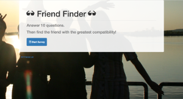

Portfolio
Food Mood
Front End Developer
This is a single page web application that searches nearby restaurants utilizing the Zomato API, then makes a second API call to a carrier service to receive real time delivery cost.
Tech Scrapper
Full Stack Developer
This full stack application scrapes a tech news website, stores the information to the database and displays the title and link of the articles scraped. The user can leave notes buy clicking on the article, which can be accessed at a later time.
Friend Finder
Front End Developer
This web application will ask the user 10 questions, based on the answers, the app will determine the closest friend match by previous entries.
Recommend a Read
Full Stack Developer
A MERN (MonogoDB, Express, React, Node) stack application that allow users to add, remove and view book recommendations left for the site owner.
Work Experience
CEO and founder
Synergy Data, Inc., Costa Mesa, CA
2006-Present
Job summary:
A value added reseller of eletronic parts, systems and peripherals.
- Setup power, computer and network infrastructure.
- Troubleshoot, repair and or replace hardware and software malfunctions.
- Managed and communicated with overseas developer to address and fix website problems.
- Writing pseudo code to give web developers a better scope of the project.
- Analyze and test website functionality
- Interviewed candidates for management and general roles
- Appointed all daily tasks and duties in the company.
- Developed and implemented protocols for order processing, returns and customer service.
Co-owner
The Nutty Barvarian, Costa Mesa, CA
2012-2014
Job summary:
A co-owner in a franchise that sold candied almonds, cashews and pecans in which each flavor was made several times daily
- Negotiated and secured locations for distribution
- Co-mangage employees
- Involved in all aspects of decision making to overcome any and all hurdles
Sales Supervisor
EZS Inc., Santa Ana, CA
2003-2005
Job summary:
In charge of technical sales and support.
- Engaged in the sales of electronic systems, parts and peripheral.
- Provided technical support for data storage, operating systems and configuration.
- Responsible for directing department team to reach monthly company revenue goals.
- Created new standard operating procedures and directives for employees to follow.
Education
Georgia Institute of Technology
Full Stack Developer Program
Full Stack Developer Program
2017-2018
Summary:
A coding program dedicated to designing and building full stack web applications. Skills learned consisted of Javascript, React.js, JQuery, Bootstrap, Node.js, MySQL, MongoDB, Express, Handlebars.js, HTML5, & CSS3
Irvine Valley College, 2001-2003
Undergraduate
Summary:
General Education with an emphasis on technology